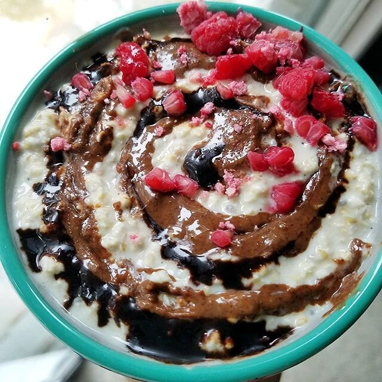

Raspberry Danish Overnight Oatmeal (vegan)

Raspberry danish overnight oatmeal with a seductive swirl is never not desirable. This oatmeal is all the flavors you love of a bakery sweet compact into a hearty and healthy breakfast! This recipe requires no cooking, and it is vegan, sugar free, and packed with fiber!
Why was I up at 7 am on a Saturday to eat this? Biiike ride time!! That's when you know you truly love something is when it comes before sleep and you just genuinely want to do it. I've been absolutely engulfed in riding lately. The love started slow...for sure. I've been wanting to pick it up for over a year, before I even broke my foot in January 2015! But I just never knew anyone to like...guide me? When I moved to Washington, my ex showed me basics and helped me buy a bike. But I still never really had anyone to ride with as much as I wanted to. Coming back to Georgia, I've made so many riding friends!!! Just took me getting over the fear of walking into a bike shop and asking. I feel dumb for waiting so long, because the love has grown so quickly. I've been riding about 4 times a week and it's all I ever want to do, ha.
With the move though...it's been hard. I'm about 40 minutes from where I lived before, so it doesn't make sense to go down to my friends there to ride during busy weekdays. I've tried to find group rides around Atlanta...but it's a joke. Let me whine about how hard life is for a minute. 1) Atlanta traffic is awful...and they get aggressive towards the bike riders at prime rush hour traffic of 6-7 pm. It's not fun and easy to get broken up by traffic. 2) There's multiple group rides I could choose from during the week...but every single one of them is mimimum 30 minutes to get to. See gripe 1 for reference. 3) I don't think there was a number 3, but I thought there was. Basically it's just not fun to get to, and not fun to actually ride. Nothing is fun. So... I've devised a plan. TO BE CONTINUED... *dundundun*
But until then, I went down to my mom's house for the weekend to ride with my normal friends in less congested, actually beautiful areas. I did my longest ride ever Saturday AND THEN THAT DISTANCE AGAIN on Sunday!! So crazy!!!! Biking is so rewarding and as long as you put in time, quick to see results.
Anywho. Bikes. Breakfast. Stuff. Try out this raspberry Danish overnight oatmeal forreal! Raspberry + chocolate is too good to refuse.
Raspberry Danish Overnight Oatmeal
-
1/2 cup Raspberry Danish flavor oatmeal (from truenutrition.com - I chose to add dried raspberries to the blend, too!)
-
1/4 cup nondairy yogurt (I use Silk brand)
-
1/4 cup unsweetened almond milk
-
1/2 TBSP chia seeds
-
1 stevia packet
Just mix everything in a bowl! You don't have to cook it or anything, just place it in the fridge overnight. The oats will soften and the chia seeds will soak up liquid to plump up. Eat in the morning cold.
I topped mine with chocolate Nuttzo nut butter, chocolate stevia syrup, and raspberries!!